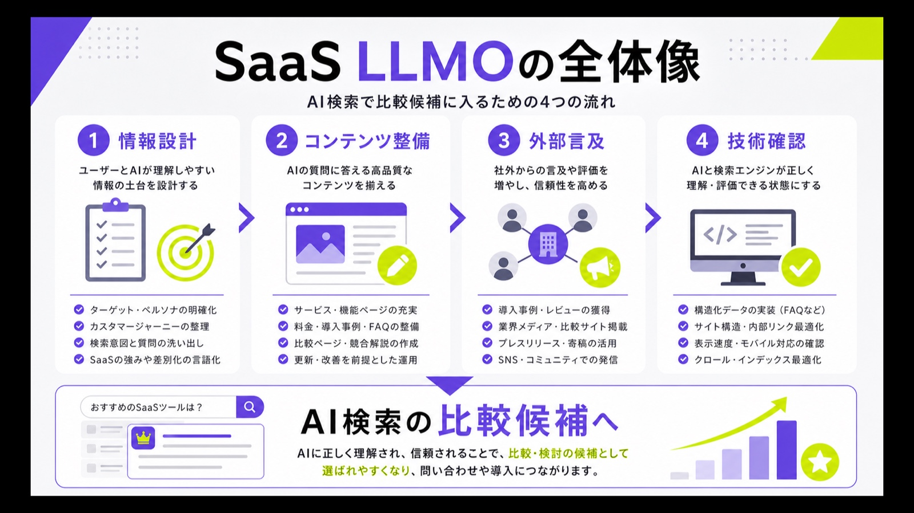
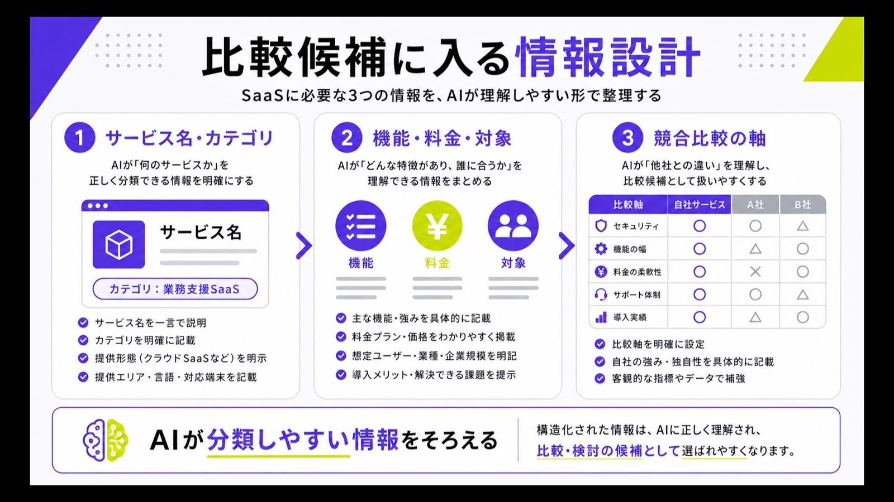
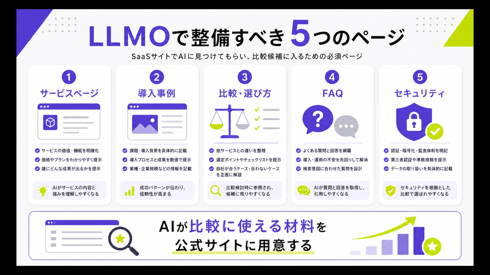
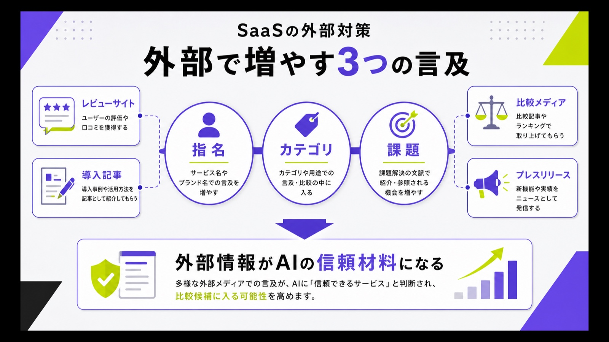
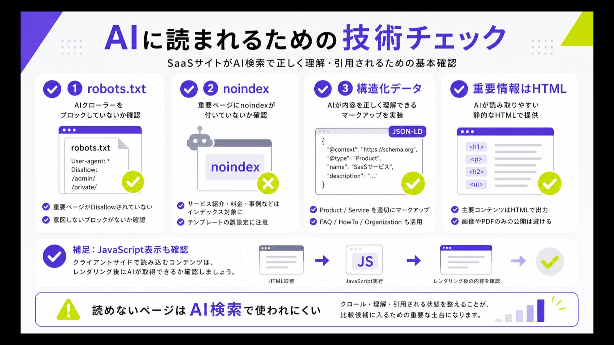
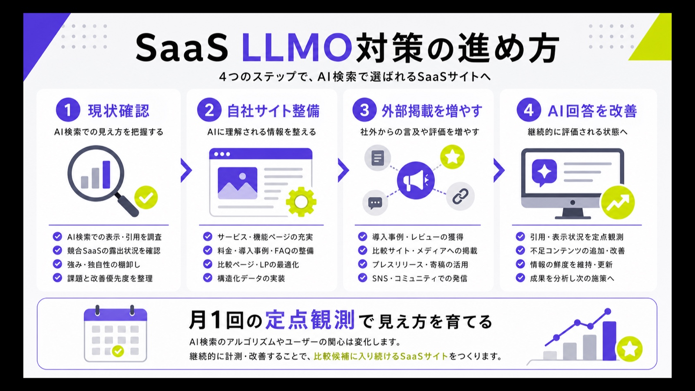

SaaSのLLMO対策とは？AI検索で比較候補に入るための具体策を解説

SaaSのLLMO対策は、ChatGPTやGeminiなどのAI検索で自社サービスを比較候補に入れてもらうための情報設計です。検索順位だけでなく、AIがどの情報を読んで候補に出すかまで考えます。
特にBtoB SaaSでは、ユーザーがサービス名を知らない段階で「おすすめのツール」「中小企業向けのCRM」などとAIに聞く場面が増えています。AI検索の全体像はAI検索対策の記事でも整理しています。
この記事では、SaaS企業がまず整えるべき情報設計、コンテンツ、外部対策、技術チェック、効果測定の進め方をわかりやすく解説します。
目次

SaaSのLLMO対策とは？
SaaSのLLMO対策とは、ChatGPTやGemini、Perplexity、Google AI OverviewsなどのAI検索で、自社サービスが正しく認識され、比較候補として挙がりやすい状態を作る施策です。
従来のSEO対策が検索結果での上位表示を重視していたのに対し、LLMOではAIが回答を作る際に、どの情報を参照し、どのサービスを候補として提示するかが重要になります。

LLMOとはAI検索で自社サービスを見つけてもらうための施策
LLMOは、Large Language Model Optimizationの略で、大規模言語モデルに自社や自社サービスを正しく理解してもらうための最適化施策です。検索エンジンだけでなく、ChatGPTやGemini、PerplexityなどのAIがユーザーの質問に回答する場面を前提にします。
たとえば「おすすめのSaaSを教えて」「中小企業向けのCRMを比較して」と聞かれたときに、自社サービスが候補として表示されるかどうかが重要です。LLMO対策では、サービス名、カテゴリ、対象顧客、機能、料金、導入事例などをAIが読み取りやすい形で整えます。
SaaSではAIに「比較候補」として認識されることが重要
SaaSは、購入前に複数サービスを比較される商材です。ユーザーは機能、料金、導入規模、サポート体制、セキュリティ、連携ツールなどを見比べながら、自社に合うサービスを選びます。
AI検索では、この比較プロセスが一気に短縮されます。ユーザーが「〇〇に強いSaaSを比較して」と質問すると、AIが候補リストや比較表を作成します。そこで自社名が出なければ、検索結果をクリックされる以前に検討対象から外れる可能性があります。
SEO対策とLLMO対策は対立するものではない
LLMO対策は、SEO対策を否定するものではありません。Googleは、AI OverviewsやAI ModeなどのAI機能でも、従来のSEOの基本が引き続き重要だと説明しています。
“The best practices for SEO remain relevant for AI features in Google Search”
ただし、SEOで上位表示を狙うだけでは不十分です。AIが回答を生成する際には、検索上位ページ、自社サイト、第三者サイト、レビュー、比較記事など複数の情報をもとに判断します。そのため、LLMOでは「検索される」だけでなく「AIに理解される」情報設計が必要になります。
SaaS企業がLLMO対策に取り組むべき理由
SaaS企業にとって、LLMO対策は単なる認知施策ではありません。AI検索上で比較候補に入るかどうかは、資料請求、デモ予約、商談化に直結する可能性があります。
特にBtoB SaaSでは、導入前の情報収集やベンダー比較にAIが使われる機会が増えており、AI上での見え方を放置することは、将来の商談機会を失うリスクになります。
BtoBソフトウェアの購買行動がAI検索に移行している
BtoBソフトウェアの購入プロセスでは、AIチャットボットを使った情報収集が広がっています。G2の2026年調査では、BtoBソフトウェア購入者の51%が、GoogleよりもAIチャットボットから調査を始めることが増えているとされています。
“51% of B2B software buyers now start their research with an AI chatbot more often than with Google”
出典：G2｜New G2 Research: Half of B2B Software Buyers Now Start Their Research With AI Chatbots
これはSaaS企業にとって大きな変化です。従来は検索結果で上位表示され、比較記事や公式サイトに訪問してもらう流れが中心でした。しかし今後は、AIが最初に候補を絞り込む場面が増えます。AIに認識されていないSaaSは、検討の入口に立てない可能性があります。
AIの推薦がベンダー選定に影響する
AI検索は、単に情報収集を楽にするだけではありません。G2の調査では、69%の購入者がAIチャットボットの案内をきっかけに、当初予定していたベンダーとは別のソフトウェアを選んでいます。さらに、3分の1はそれまで知らなかったベンダーから購入しています。
つまり、AI検索は既存のブランド認知を補完するだけでなく、無名のSaaSが比較候補に入る機会にもなります。一方で、既に認知があるサービスでも、AI上で十分に言及されなければ、競合に候補枠を奪われる可能性があります。
指名検索の前段階で候補から外れるリスクがある
SaaSの購買では、ユーザーがいきなりサービス名で検索するとは限りません。多くの場合、「請求管理を自動化したい」「営業管理を効率化したい」「問い合わせ対応を改善したい」など、課題起点で情報収集を始めます。
AI検索では、この課題起点の質問に対して、AIが数社の候補を提示します。ここで名前が出なければ、ユーザーは自社サービスを知らないまま比較を進めます。LLMO対策では、指名検索を増やす前に、課題名やカテゴリ名の段階で候補に入る状態を作ることが重要です。
SaaSのLLMO対策で重要な情報設計
SaaSのLLMO対策では、AIが自社サービスを正しく分類できるように情報を整える必要があります。抽象的なコピーだけでは、AIはサービスの特徴や対象顧客を判断しにくくなります。
重要なのは、サービスのカテゴリ、対象企業、利用シーン、機能、料金、導入効果を明確にすることです。AIが比較や推薦に使える材料を、自社サイト内に十分に用意しておく必要があります。

サービス名・カテゴリ・対象企業を明確にする
SaaSサイトでは、「何のサービスなのか」を一目で理解できる状態にすることが大切です。「業務効率化を支援します」のような抽象的な表現だけでは、AIが正確にカテゴリを判断できません。
たとえば「中小企業向けの勤怠管理システム」「BtoB企業向けのマーケティングオートメーションツール」「士業向けの顧客管理SaaS」のように、対象顧客とカテゴリを明記します。AIは文脈から情報を判断するため、サービス名とカテゴリ名を一貫して使うことが重要です。
機能・料金・導入対象を一覧で把握できるようにする
SaaSの比較では、機能、料金、無料トライアル、契約期間、導入規模、対応業種、サポート内容、連携ツールなどが重視されます。これらの情報がページ内に散らばっていると、AIもユーザーも比較しにくくなります。
サービスページや料金ページでは、主要な判断材料を表や見出しで明確に分けることが大切です。料金が問い合わせ必須の場合でも、プランの違いや対象企業、利用開始までの流れを補足しておくと、AIがサービスの位置づけを理解しやすくなります。
競合比較で使われる軸を先回りして用意する
AI検索では、「A社とB社の違い」「〇〇に強いSaaS」「中小企業におすすめのツール」などの比較質問が行われます。そのため、自社がどの比較軸で評価されるべきかを先に定義しておくことが重要です。
たとえば、低価格、導入スピード、サポート体制、業界特化、連携機能、セキュリティなど、競合と比べられやすい軸を明確にします。自社の強みだけでなく、向いている企業・向いていない企業まで書くことで、AIにもユーザーにも信頼されやすい情報になります。
SaaSサイトで整備すべきLLMO対策コンテンツ
LLMO対策では、単にブログ記事を増やすだけでは不十分です。AIがサービスを理解し、比較候補として扱うには、公式サイト内に複数の判断材料が必要です。
特に重要なのは、サービスページ、導入事例、比較記事、FAQ、セキュリティページです。これらを整えることで、AIが自社サービスをカテゴリや課題と結びつけやすくなります。

サービスページ
サービスページは、SaaSのLLMO対策における中心コンテンツです。誰向けのサービスなのか、どの業務課題を解決するのか、どのような機能があるのかを明確に記載します。
特にファーストビューでは、抽象的なキャッチコピーだけで終わらせないことが大切です。「〇〇業界向け」「〇〇業務を自動化」「〇〇名規模の企業に対応」など、AIがサービスの分類に使える言葉を入れます。サービスの強みは、導入対象や利用シーンとセットで書くと伝わりやすくなります。
導入事例ページ
導入事例は、AIにとって「どの企業が、どの課題で、どのように使っているか」を判断する材料になります。会社名、業種、従業員規模、導入前の課題、導入後の成果、利用した機能を具体的に書くことが重要です。
「業務効率化に成功しました」だけでは情報が弱くなります。問い合わせ対応時間の削減、作業工数の短縮、管理コストの削減、商談化率の改善など、成果が具体的にわかる形にします。導入事例が増えるほど、AIは特定の業界や課題とサービスを結びつけやすくなります。
比較・選び方コンテンツ
「〇〇システム 比較」「〇〇 SaaS おすすめ」「〇〇ツール 選び方」のような記事は、AI検索でも参照されやすい重要なコンテンツです。ユーザーがまだ特定のサービス名を決めていない段階で接点を作れます。
比較記事では、自社サービスを一方的に押し出すのではなく、選定基準を丁寧に示すことが大切です。機能、料金、サポート、セキュリティ、導入スピード、運用負荷などを客観的に解説し、その中で自社が向いている条件を自然に示します。
FAQコンテンツ
FAQは、AIが短い回答を作る際に参照しやすいコンテンツです。料金、契約期間、無料トライアル、解約、データ移行、セキュリティ、導入期間、サポート体制など、商談前によく聞かれる質問をページ上に明記します。
FAQを作るときは、単なる一問一答ではなく、ユーザーが意思決定しやすい情報を入れることが大切です。たとえば「無料トライアルはありますか？」に対して、期間、使える機能、申し込み方法、注意点まで書くと、AIにもユーザーにも有用な回答になります。
セキュリティ・運用体制ページ
BtoB SaaSでは、セキュリティや運用体制が導入判断に大きく影響します。ISMS、Pマーク、SOC2、データ保管場所、権限管理、バックアップ、障害対応、サポート体制などをまとめたページを用意します。
特に法人向けSaaSでは、情報システム部門や管理部門が導入前に確認する項目を先回りして書くことが大切です。セキュリティ情報が不足していると、AIが法人向けの信頼性を判断しにくくなります。導入前の不安を減らす情報は、LLMO対策としても重要です。
SaaSのLLMO対策で行うべき外部対策
LLMO対策では、自社サイトだけでなく、外部サイトでどのように言及されているかも重要です。AIは自社サイトだけを見て回答するのではなく、比較サイト、レビューサイト、ニュース記事、業界メディアなども参考にします。
SaaS企業は、自社がどのカテゴリで、どのような強みを持つサービスとして紹介されているかを外部にも広げる必要があります。

レビューサイトの情報を整える
SaaSでは、レビューサイトの情報がAI検索上の信頼材料になりやすい傾向があります。G2の調査でも、AIチャットボットの推薦を信頼するうえで、レビューサイトからの引用が重要なシグナルになっています。
そのため、G2、ITreview、BOXIL、Capterraなどに掲載されているサービス情報は定期的に確認します。カテゴリ、機能、料金、対象企業、導入事例、口コミ内容が古いままだと、AIにも誤った情報が伝わる可能性があります。レビュー獲得と情報更新を継続することが重要です。
比較メディア・業界メディアへの掲載を増やす
外部メディアでの掲載は、AIに対して第三者情報を増やす役割があります。比較記事、業界メディア、導入インタビュー、プレスリリースなどに掲載されることで、自社サイト以外にもサービスの説明文脈が生まれます。
重要なのは、掲載数だけを増やすことではありません。どのカテゴリで紹介されているか、どの強みと結びついているか、競合と比べてどの位置づけなのかが大切です。外部記事でも、自社が狙いたいカテゴリ名や課題名と一緒に言及される状態を作ります。
指名・カテゴリ・課題の3方向で言及を増やす
SaaSの外部対策では、サービス名だけを露出させても効果が限定的です。AIに比較候補として認識されるには、指名、カテゴリ、課題の3方向で言及を増やす必要があります。
たとえば、サービス名だけでなく「中小企業向けCRM」「営業管理の属人化を防ぐSaaS」「BtoB企業向けMAツール」のように、カテゴリや課題と一緒に言及されることが重要です。AIは複数の文脈からサービスを理解するため、狙いたい市場での意味づけを外部にも作る必要があります。
SaaSサイトで実施したい技術的なLLMO対策
LLMO対策というとコンテンツ施策に目が向きがちですが、AIや検索エンジンがページを読み取れる状態にしておくことも重要です。
特にSaaSサイトでは、LP、料金ページ、ヘルプページ、比較ページなどがnoindexになっていたり、重要情報が画像だけで掲載されていたりするケースがあります。まずは読める状態を作ることが前提です。

AIクローラーが重要ページを読める状態にする
ChatGPTの検索機能に表示されるには、OAI-SearchBotがページにアクセスできる状態が重要です。OpenAIは、OAI-SearchBotをChatGPTの検索機能でWebサイトを表示するために使用すると説明しています。
“OAI-SearchBot is used to surface websites in search results in ChatGPT’s search features.”
SaaSサイトでは、CDN、WAF、セキュリティ設定によってAIクローラーをまとめて遮断している場合があります。サービスページや比較ページをいくら改善しても、AIがアクセスできなければ十分に参照されません。まずはrobots.txt、サーバー設定、noindexの状態を確認します。
構造化データでサービス情報を補足する
構造化データは、ページ内容を検索エンジンに伝えるための標準化された形式です。SaaSサイトでは、Organization、SoftwareApplication、Product、FAQPage、BreadcrumbList、Articleなどをページ内容に合わせて使います。
ただし、構造化データだけで順位やAI回答が決まるわけではありません。ページ上に見える本文と一致した情報を、補助的にマークアップすることが大切です。サービス名、カテゴリ、料金、FAQ、記事情報などを整理し、検索エンジンやAIが誤解しにくい状態を作ります。
重要情報を画像だけにしない
料金表、機能一覧、導入実績、比較表などを画像だけで掲載すると、AIや検索エンジンが内容を正確に読み取りにくくなります。デザイン上は画像を使っても問題ありませんが、重要な情報はHTMLテキストでも掲載する必要があります。
特に料金、機能、対象企業、対応範囲、導入効果はAIが比較に使いやすい情報です。画像内の文字だけに頼らず、本文や表として読める形にしておくことで、AI検索だけでなく通常検索やユーザー体験の面でも有利になります。
noindex・robots.txt・JavaScript表示を確認する
SaaSサイトでは、開発時の設定が残ったまま重要ページがnoindexになっていたり、特定ディレクトリがrobots.txtでブロックされていたりするケースがあります。こうした状態では、AI検索以前に検索エンジンへ正しく認識されません。
また、JavaScriptで後から表示される料金表や比較表は、環境によって読み取りにくくなる場合があります。Search ConsoleのURL検査、レンダリング確認、robots.txtの確認を行い、AIに読ませたい情報が公開状態で取得できるかを確認します。
SaaSのLLMO対策で作るべき記事テーマ例
SaaSのLLMO対策では、サービスページだけでなく、課題解決型の記事や比較記事も重要です。ユーザーがAIに質問する内容を想定し、その回答に使われる情報を自社サイト内に用意します。
記事テーマを考える際は、単なる検索ボリュームだけで判断しないことが大切です。AI検索で比較候補に入るためには、カテゴリ名、課題名、競合名、導入シーンに対応したコンテンツが必要です。
「〇〇 SaaS 比較」系の記事
「〇〇 SaaS 比較」系の記事は、検討度の高いユーザーに接触しやすいテーマです。勤怠管理、営業管理、請求管理、問い合わせ管理、採用管理など、カテゴリごとに比較記事を用意することで、AIが候補を提示する際の参照材料になります。
記事では、単にサービス名を並べるだけでは不十分です。選定基準、向いている企業、料金の見方、導入時の注意点、比較表を入れます。自社サービスを含める場合も、強引に1位扱いするのではなく、どの条件で選ぶべきかを明確にした方が信頼されやすくなります。
「〇〇ツール 選び方」系の記事
「〇〇ツール 選び方」系の記事は、ユーザーがまだ具体的なサービス名を決めていない段階で役立ちます。AI検索でも「どのツールを選べばいいか」という相談形式の質問に対して、選定基準を示すページは参照されやすくなります。
記事では、機能、料金、サポート、セキュリティ、連携、導入後の運用負荷などを解説します。SaaSは導入して終わりではなく、社内定着や運用改善まで含めて成果が決まります。そのため、選び方記事では導入後の運用まで踏み込むことが重要です。
「〇〇 課題 解決」系の記事
SaaSは、カテゴリ名ではなく課題名から探されることも多い商材です。「営業管理 属人化」「請求業務 自動化」「問い合わせ対応 効率化」「採用管理 工数削減」など、ユーザーが抱える課題を起点に記事を作ります。
課題解決型の記事では、最初からサービス紹介に入らないことが大切です。課題が起きる原因、放置した場合のリスク、解決策の選択肢、SaaS導入が有効なケースを順番に説明します。そのうえで、自社サービスがどの条件に向いているかを自然に示します。
「競合比較」系の記事
「A社 B社 比較」「〇〇 代替」「〇〇 競合」のような記事は、購買意欲が高いユーザーに近いテーマです。すでに特定サービスを検討しているユーザーが、別の選択肢を探すタイミングで接点を作れます。
競合比較では、相手を下げる表現は避けるべきです。機能、価格、サポート、導入規模、対象業種、連携性などを客観的に比較し、どの企業にはどちらが向いているかを明確にします。AIにとっても、人間にとっても、冷静な比較情報の方が使いやすいコンテンツになります。
SaaSのLLMO対策で見るべき指標
LLMO対策は、記事を公開して終わりではありません。AI検索上で自社サービスがどのように表示されているか、流入やCVにどう影響しているかを確認しながら改善する必要があります。
SaaSでは、AI回答内での表示、AI検索からの流入、比較候補への入り方、資料請求やデモ予約への貢献をあわせて見ることが重要です。
AI検索からの流入数
ChatGPTやPerplexityなどからの流入は、GA4などのアクセス解析で確認します。参照元としてchatgpt.comやperplexity.aiなどが表示される場合は、AI検索経由の接点として把握できます。
ただし、AI検索の影響は流入数だけでは測れません。AIの回答内でサービス名を見たユーザーが、後から指名検索や広告経由で訪問するケースもあります。そのため、AI検索からの直接流入に加えて、指名検索数、ブランド名の検索クエリ、比較ページのCVもあわせて確認します。
AI回答内での自社名・サービス名の表示回数
LLMO対策では、狙いたいカテゴリや課題でAIに質問し、自社名が回答内に表示されるかを定期的に確認します。ChatGPTの引用率調査のように、質問パターンを決めて見ると確認しやすくなります。「おすすめの〇〇SaaS」「中小企業向けの〇〇ツール」「〇〇を効率化できるサービス」など、実際の検討に近い質問を使います。
確認するときは、表示されるかどうかだけでなく、どのような文脈で紹介されるかも見ます。強みが正しく説明されているか、古い料金や誤った機能が出ていないか、競合と比べて不利な書かれ方をしていないかを確認し、必要に応じて自社サイトや外部情報を改善します。
比較候補への入り方
AI回答に自社名が表示されても、それだけで十分とはいえません。比較候補の何番目に出るか、どのカテゴリで出るか、どの強みと一緒に紹介されるかが重要です。
たとえば「安いSaaS」として表示されるのか、「大企業向け」として表示されるのか、「導入しやすいツール」として表示されるのかによって、獲得できる見込み客の質が変わります。狙いたいポジションとAI上の説明がズレている場合は、ページ内の表現や外部掲載情報を見直します。
資料請求・デモ予約への貢献
LLMO対策は、最終的に商談や売上につながるかで評価する必要があります。AI検索で表示されること自体が目的ではなく、資料請求、デモ予約、問い合わせ、無料トライアルなどにどう貢献しているかを見ます。
具体的には、AI検索経由のCV、比較記事経由のCV、指名検索の増加、商談時の流入経路ヒアリングなどを確認します。SaaSは検討期間が長くなりやすいため、初回接触からCVまでの経路を一つのチャネルだけで判断しないことが大切です。
SaaS企業がLLMO対策を進める手順
SaaSのLLMO対策は、やみくもに記事を増やすより、現状把握から始める方が効果的です。AI上での表示状況を確認し、足りない情報を補い、外部情報を増やし、定点観測しながら改善します。
特に最初は、サービスページ、料金ページ、導入事例、FAQ、比較記事を優先して見直すのがおすすめです。

まずAI上での現状を確認する
最初に、ChatGPT、Gemini、Perplexity、Google AI Overviewsなどで、自社がどのように表示されるかを確認します。AI Overviews表示調査の考え方も参考になります。サービス名だけでなく、カテゴリ名、課題名、競合名、業界名を組み合わせて質問します。
たとえば「中小企業向けの〇〇SaaSを比較して」「〇〇業務を効率化できるツールを教えて」「A社の代替サービスは？」のように、実際の検討に近い質問を使います。自社名が出ない、説明が古い、強みが違う場合は、改善すべき情報が見えてきます。
自社サイトのサービス情報を整える
次に、自社サイトのサービス情報を見直します。サービスページ、料金ページ、機能ページ、導入事例、FAQ、セキュリティページを確認し、AIが理解しやすい情報になっているかを確認します。
特に「誰向けか」「何を解決するか」「どの業務に使うか」「競合と何が違うか」を明確にします。抽象的な表現が多い場合は、業種、企業規模、部門、利用シーン、成果を具体化します。AIに伝わる情報は、そのままユーザーにとってもわかりやすい情報になります。
外部掲載情報を増やす
自社サイトを整えた後は、外部での言及を増やします。レビューサイト、比較メディア、業界メディア、プレスリリース、導入インタビューなどに掲載されることで、AIが参照できる情報の幅が広がります。
外部掲載では、サービス名だけでなく、カテゴリ名や課題名と一緒に紹介されることが重要です。たとえば「問い合わせ管理SaaS」「営業管理の属人化を防ぐツール」「バックオフィス効率化サービス」のように、狙いたい文脈で言及される状態を作ります。
定期的にAI回答を確認して改善する
LLMO対策は、一度設定すれば終わる施策ではありません。AIの回答は、検索結果、外部情報、モデルの変化によって変わります。そのため、月に1回程度は主要な質問パターンで表示状況を確認します。
確認すべき項目は、自社名が出るか、競合と並んでいるか、強みが正しく書かれているか、古い情報が残っていないかです。問題が見つかった場合は、該当するページや外部掲載情報を更新します。継続的な改善によって、AI上での見え方を安定させやすくなります。
SaaSのLLMO対策でよくある失敗
SaaSのLLMO対策では、AI検索だけを意識しすぎて、本来のユーザー価値を見失うケースがあります。AIに拾われるための施策であっても、最終的に読むのは人間です。
ここでは、SaaS企業がLLMO対策で避けたい失敗を紹介します。
自社サイトだけを直して終わってしまう
LLMO対策でよくある失敗が、自社サイトだけを改善して終わってしまうことです。もちろん公式サイトの情報は重要ですが、AIは外部サイトの情報も参考にします。
SaaSでは、レビューサイト、比較記事、業界メディア、導入事例、プレスリリースなど、外部の情報が比較候補に影響します。自社サイトでは「中小企業向け」と書いていても、外部では別カテゴリで紹介されていれば、AIの認識がズレる可能性があります。外部情報まで含めて整えることが大切です。
抽象的な強みばかりで具体情報が足りない
「使いやすい」「業務効率化できる」「サポートが手厚い」といった表現だけでは、AIは他社との違いを判断しにくくなります。SaaSの比較では、具体的な機能や導入条件が重要です。
強みを書くときは、対象業種、企業規模、利用部門、導入期間、連携ツール、対応範囲、実績などをセットで書きます。たとえば「サポートが手厚い」ではなく、「初期設定から運用定着まで専任担当が支援する」のように、判断材料になる表現に変える必要があります。
AI生成記事を量産してしまう
LLMO対策として、AIで記事を大量生成すればよいと考えるのは危険です。生成AIはリサーチや構成作成に役立ちますが、ユーザーに価値を加えない大量生成コンテンツは、検索エンジンから評価されにくくなる可能性があります。
SaaSの記事では、一般論だけでは差別化できません。実際の導入事例、顧客の課題、比較表、料金の見方、運用上の注意点など、自社だから出せる情報を入れる必要があります。AIで下書きを作る場合でも、人間が判断材料として使える内容に仕上げることが重要です。
SaaSのLLMO対策は比較候補に入るための情報設計から始めよう
SaaSのLLMO対策は、AIに好かれる裏技ではありません。より広い考え方はAI検索対策の基本でも整理しています。自社サービスの情報を正確に整理し、AIにもユーザーにも理解しやすい形で公開する取り組みです。
特にSaaSでは、AI検索が比較候補を作る場面と相性が強いため、サービスページ、導入事例、比較記事、FAQ、レビューサイト、外部メディアを横断して整える必要があります。
AI検索で候補に入るためには、まず自社がどのカテゴリで、どの課題を解決し、どの企業に向いているのかを明確にすることが大切です。そのうえで、自社サイトと外部情報の両方を改善し、AI回答での表示状況を定期的に確認します。
SaaSのLLMO対策は、短期的にはAI検索からの流入や指名検索の増加につながります。中長期的には、比較検討の初期段階で自社サービスを認識してもらい、資料請求やデモ予約の機会を増やすための重要な施策になります。
参考リンク
参考：Google Search Central｜AI features and your website
参考：G2｜New G2 Research: Half of B2B Software Buyers Now Start Their Research With AI Chatbots